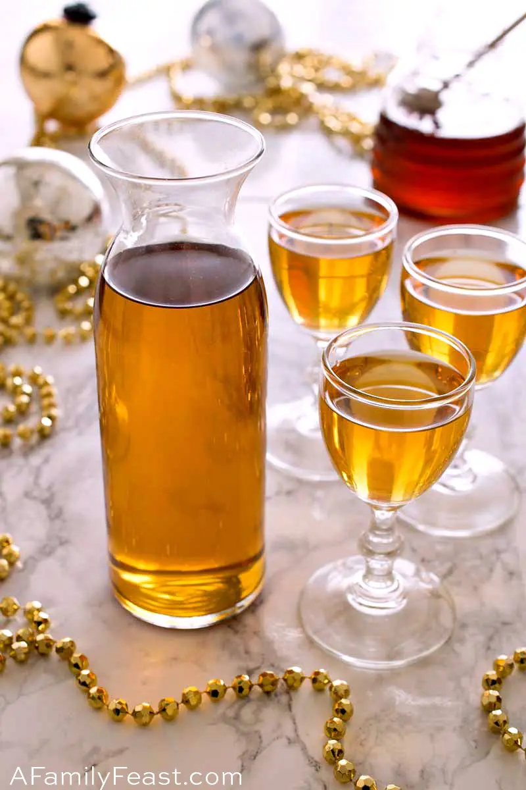

Krupnik

Ingredients
- 1lb of your favorite honey.
- 1 750ml bottle of vodka
- 8 whole cloves
- 3 sticks cinnamon
- 12 peppercorns
Steps
- In a large, sanitized mixing bowl, stir the honey into the vodka until completely dissolved
- Place cloves, cinnamon and peppercorns in a large, airtight container such as a mason jar
- Pour the honey and vodka solution over the spices in the mason jar.
- Shake the mason jar vigorously for at least a minute.
- Allow the krupnik to infuse for at least two weeks.
- Strain the krupnik into a liquor bottle using a coffee filter or cheesecloth in order to remove any sediment.
- Krupnik can be served at room temperature or chilled, and will keep pretty much indefinitely.